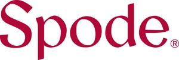
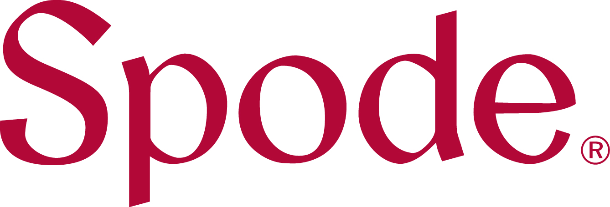

대표 로고대표 브랜드 마크
대표 로고대표 브랜드 마크포트메리온 Portmeirion
포트메리온(Portmeirion)은 1960년 영국에서 설립된 도자기·식기 브랜드이다.
최종 업데이트
포트메리온은 어떤 브랜드인가
포트메리온은 1960년 수전 윌리엄스-엘리스가 영국 스토크온트렌트에서 세운 도자기와 식기 브랜드다. 영국 도예 산지인 스토크온트렌트의 도자 회사 두 곳을 인수해 출발했고, 1972년 선보인 보태닉 가든 패턴이 식물 일러스트로 큰 인기를 얻으며 대표작이 됐다.
지금은 런던 증시에 상장된 포트메리온그룹이 운영하며 스포드와 로열 우스터 같은 헤리티지 도자 브랜드를 함께 거느린 연 매출 약 9천만 파운드대 규모의 그룹이다.
포트메리온은 어떻게 봐야 할까
웨지우드가 럭셔리와 예식용 고급 노선, 덴비가 내구성 중심의 일상용 노선이라면, 포트메리온은 1972년 보태닉 가든의 손으로 그린 식물 일러스트를 시그니처로 삼아 장식성과 실용성을 함께 잡는 자리에 선다. 2009년 경영난에 빠진 스포드와 로열 우스터의 상표와 지식재산을 약 3백20만 파운드에 인수해, 흩어져 있던 영국 헤리티지 도자를 한데 묶은 그룹 체제를 완성했다.
한국에서는 2000년대 이후 혼수와 선물용 그릇으로 퍼지며 '국민 그릇'으로 불릴 만큼 자리 잡았고, 한국이 그룹의 핵심 시장이 된 사실은 최근 실적 변동에서도 분명히 드러난다.
포트메리온은 어떻게 시작되고 성장했나
시작은 1960년이다. 수전 윌리엄스-엘리스와 남편 유언이 스토크온트렌트의 도자 장식 회사 그레이를 사들이고, 이어 성형까지 가능한 커크햄스를 인수해 둘을 합치며 포트메리온 포터리즈를 세웠다.
수전은 포트메리온 마을을 설계한 건축가 클러프 윌리엄스-엘리스의 딸로, 아버지의 마을 상점에 둘 도자 선물을 만든 일이 사업의 출발점이 됐다. 초기에는 그레이 시절의 장식 기법을 이어받아 식기를 꾸몄고, 1972년 수전이 직접 그린 보태닉 가든이 식물 세밀화로 크게 히트하며 매출을 끌어올렸다.
2009년에는 법정관리에 들어간 스포드와 로열 우스터의 상표와 지식재산을 인수해, 여러 헤리티지 브랜드를 품은 그룹으로 확장했다.
포트메리온의 브랜드 아이덴티티는 무엇인가
아름다우면서도 쓸모 있는 식기를 만든다는 창업 철학이 바탕이다. 손으로 그린 듯한 보태닉 가든의 꽃과 식물 일러스트가 브랜드의 얼굴이며, 빈티지한 정취와 매일 써도 견디는 단단함을 동시에 추구한다.
타깃은 집밥과 손님맞이, 선물을 즐기는 폭넓은 생활자이고, 결혼과 집들이 선물 수요와도 잘 맞는다. 목소리는 정원과 자연을 식탁으로 끌어들이는 따뜻하고 다정한 톤으로, 한 끼를 계절과 정원의 이야기로 채운다는 결을 지닌다.
포트메리온의 대표 제품과 서비스는 무엇인가
핵심은 접시와 볼, 머그, 찻잔 같은 보태닉 가든 식기와 서빙 웨어이며, 그룹 차원에서는 스포드의 블루 이탈리안 같은 헤리티지 라인과 향초 브랜드도 함께 다룬다. 가격대는 낱개 접시부터 정찬 세트까지 넓게 걸쳐 입문용 선물에서 본격 세트까지 고를 수 있다.
백화점 그릇 코너와 공식 온라인몰, 해외 유통망을 통해 한국과 영국, 미국 등에서 판매된다.
포트메리온은 지금 어떤 상태인가
운영 주체는 런던 증시 상장사 포트메리온그룹이며, 본사와 핵심 공장은 영국 스토크온트렌트에 있다. 2024년 매출은 약 9천만 파운드대로 전년보다 11% 줄었는데, 한국 시장의 큰 폭 감소가 주된 원인으로 지목됐다.
그룹은 스토크온트렌트 자국 생산 비중을 약 4분의 1 수준에서 더 끌어올리겠다고 밝혔다. 다만 한국 매출 비중 같은 시장별 세부 수치와 가장 최근 시점의 확정 실적은 공개되지 않았다.
포트메리온 로고는 어떻게 변해왔나
대표 로고대표 브랜드 마크
BI/CI 아카이브보관 이미지 1
BI/CI 아카이브 3보관 이미지 3자주 묻는 질문
포트메리온는 어느 나라 브랜드인가요?
포트메리온는 영국의 홈·라이프스타일 브랜드입니다.
포트메리온는 언제 설립되었나요?
포트메리온는 1960년 설립되었습니다.
포트메리온의 브랜드 아이덴티티는 무엇인가요?
아름다우면서도 쓸모 있는 식기를 만든다는 창업 철학이 바탕이다.
포트메리온의 대표 제품은 무엇인가요?
핵심은 접시와 볼, 머그, 찻잔 같은 보태닉 가든 식기와 서빙 웨어이며, 그룹 차원에서는 스포드의 블루 이탈리안 같은 헤리티지 라인과 향초 브랜드도 함께 다룬다.
포트메리온는 현재 어떤 상태인가요?
운영 주체는 런던 증시 상장사 포트메리온그룹이며, 본사와 핵심 공장은 영국 스토크온트렌트에 있다.
포트메리온의 창업자는 누구인가요?
포트메리온의 창업자는 Susan Williams-Ellis입니다(위키데이터 기준).
포트메리온의 본사는 어디에 있나요?
포트메리온의 본사는 스토크온트렌트에 있습니다(위키데이터 기준).
출처와 검증
포트메리온 관련 참고: 공식 웹사이트 · 위키데이터 Q7232125 · 영어 위키백과. 브랜드명은 한글과 원어를 함께 표기하되 데이터에 없는 표기는 만들지 않습니다. 기원 국가·설립연도는 검수된 정의문에서 확인된 값을 우선하고, 없을 때만 공식 웹사이트 URL이 일치하는 위키데이터 개체의 값을 씁니다. 위키데이터 값은 2026-09-07 기준입니다.